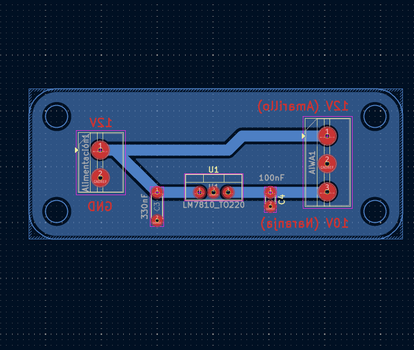
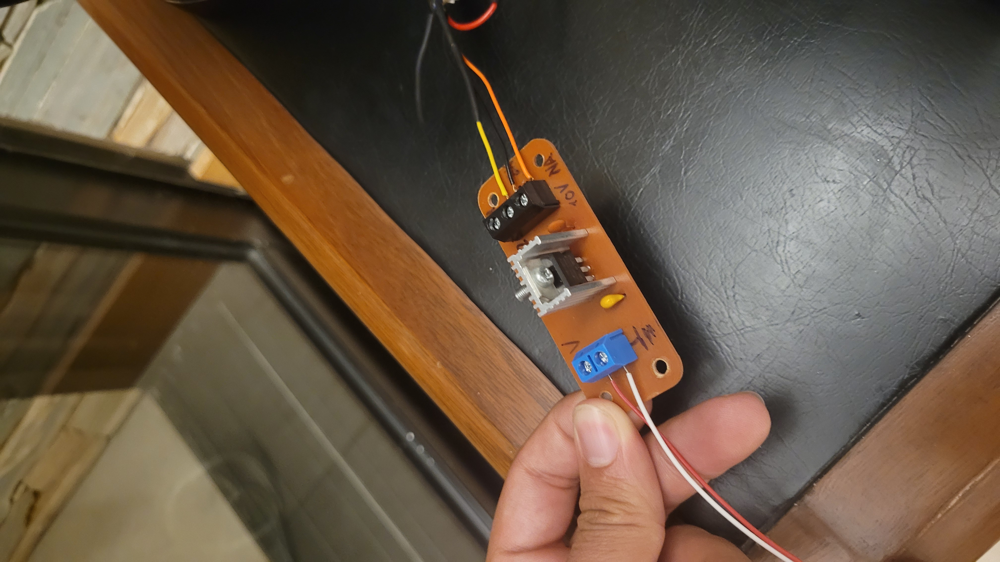
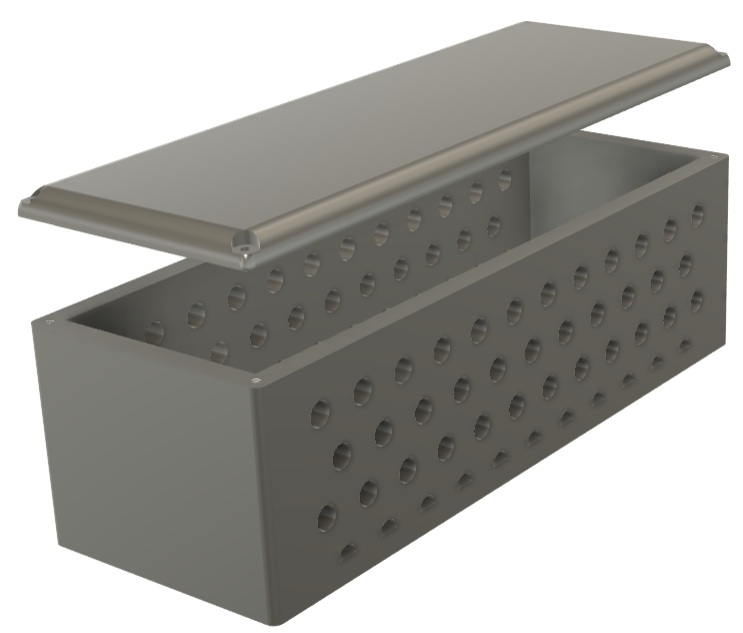

Im Projekt wurde ein altes Plattenspieler genommen und restauriert, damit es mit einer moderneren Stereoanlage benutzt werden könnte. Dafür wurde das Handbuch untersucht und das ganze System überprüft mithilfe eines Multimeters. Die Anpassungen an dem neuen System wurden mit einer kleinen Leiterplatte gemacht und dann wurde eine Hülle für den 3D-Druck entworfen. Das Projekt ist nach eigene Interesse entstanden wegen einer großen Leidenschaft für Musik und Elektronik.



Fehlerdiagnose wurde mithilfe eines Multimeters und eines Osziloskop gemacht. Die ganze Schaltung wurde überprüft und es gab keine Kurzschlüsse, aber die originale Stromquelle der Anlage gab es nicht mehr, so eine neue sollte hergestellt werden. Dafür wurde eine konventionelle Stromquelle genommen und zu einer entworfen Schaltung verbindet, sodass das Gerät funktionieren könnte. Dann wurde die Fehlerdiagnose beendet und es wurde gefunden, dass alles in Ordnung war.
Das Plattenspieler hatte eine spezifische Verbindung für die originale Stereoanlage von der selben Marke (AIWA), so eine Veränderung musste gemacht werden um es mit der modernen Anlage zu benutzen. Zum Glück, das Stereo hatte schon die notwendige Kanale, so nur ein Paar Kabel sollten verknüpft werden.
Die Leiterplatte musste hergestellt werden, um die neue Stromquelle zu benutzen. Diese Leiterplatte wurde in KiCad entworfen und auch eigenständig zugeschnitten. Eine Hühle für diese Platte wurde dann für den 3D-Druck im Sfotware Autodesk Fusion ausgearbeitet.
Das Projekt ist noch laufend und noch manche Dinge müssen erledigt werden. Trotzdem, ich habe dabei gelernt neugirig zu sein und neue Sachen zu versuchen, obwohl ich keine Idee davon habe. HandBücher sind meistens einfach zu finden und mit genugender Geduld kann man diese Projekte schaffen.